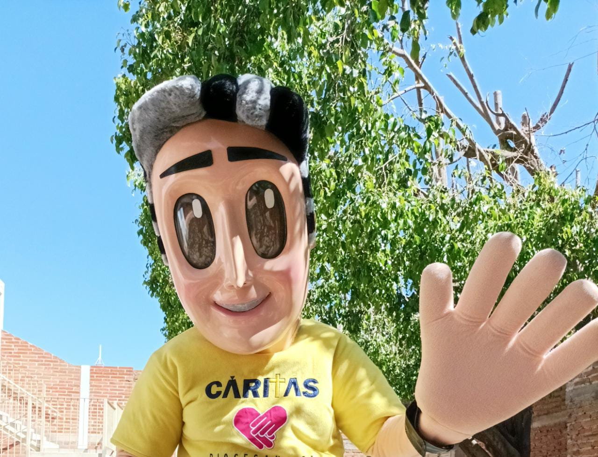
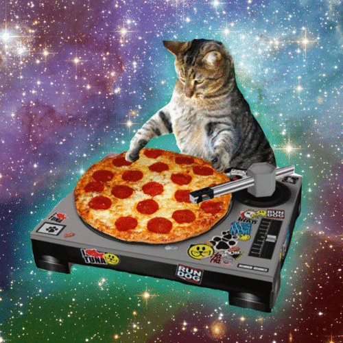

¡Espero te haya gustado :)!
Fue un recorrido duro, pero llegaste a este punto, estoy muy orgulloso de ti. Celebralo con tus amigos y familia :)
Espero te haya gustado el contenido, que hayas aprendido algo nuevo y que tu fe catolica sea mucho mejor ahora, nos veremos en otra oportunidad, cuidate mucho. Te quiero.